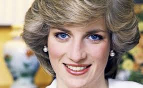

Kenia,Carmen
|
|||
| Inicio | biografia | logros | contacto |
Princesa Diana |
|||
| Integrante de la nobleza británica, creció en Sandringham, cerca de la finca de la familia real. Hija menor de John Spencer, VIII conde de Spencer, y de Frances Roche, se vio fuertemente afectada por su divorcio en 1967. No se distinguió académicamente, pero tenía talento en la música, la danza y los deportes | |||
|  | |||
| todos lo de rechos reservadps pertenecen a Kenia Danaé Magaña Capín y María del Carmen Arreaga-Cuervo | |||